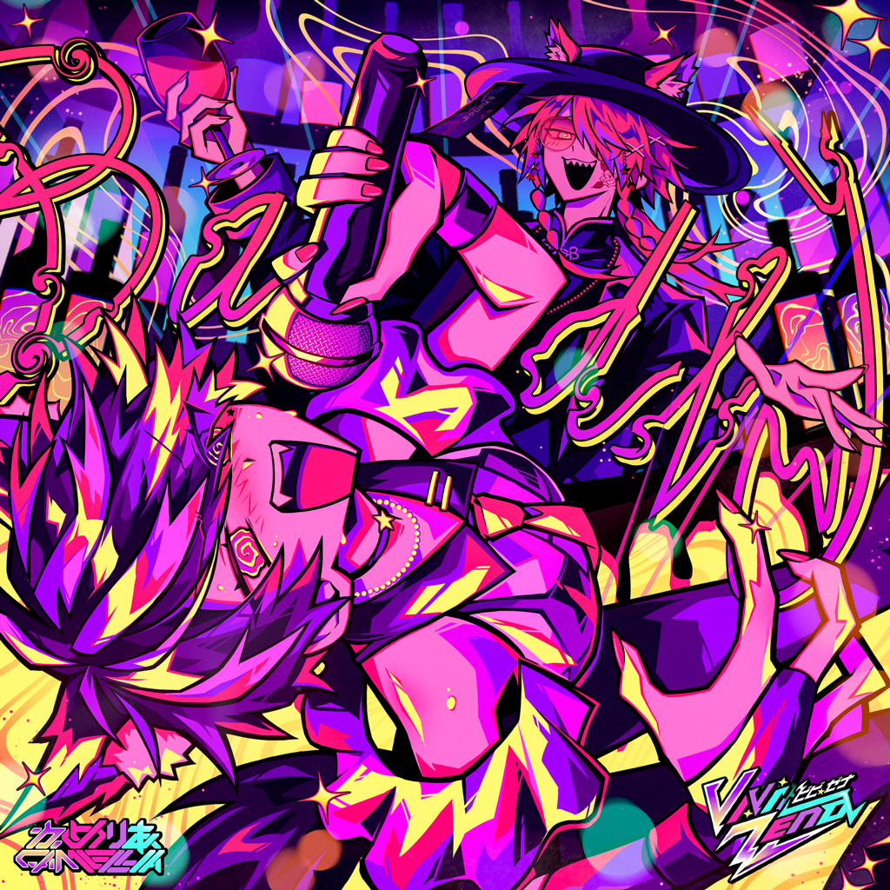
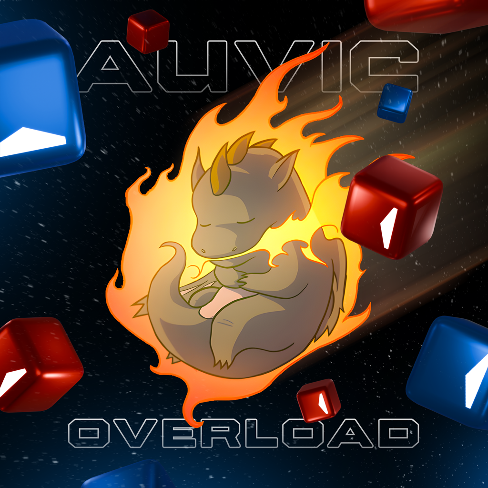

By: NARWALL
Hello World!
To start off making a post about my work with Beat Saber has been something I always wanted to do. Every since I got contracted and began to really understand the "OST style" I wanted to write something like this.
With the release of OST8 I finally felt the confidence in my own work to share my process. Please enjoy the small look into my mind! (or dont...)

To start off all mapping/level is done in the in-game editor, I dont use extenal programs such as chromapper or MMA2 in official work at all. Back when I did customs I was a huge fan of chromapper (and still am!) but the in-game editor has so many features that are so important to our workflow now that its not even a question.
When I was informed we were doing OST8 and AaltopahWi, Syndicate, and me were tasked to work on it together. I ended up taking the biggest role for mapper and Aalto focused mostly on lighting but it would not have been possible without them. (Thanks for letting me take Expert+ guys!)
For about 2 weeks I listened to this song DAILY before even mapping it. I don't usually listen that much to a song but the density of this one made it easier to digest when starting the process of mapping. Before placing really anything I bookmark each section of a song, this way its easier to split work but also it just makes more sense in my head.
One big difference with how I work now is switching to making timings first with dot notes then going back and doing patterns. This was something Freeek, Kole, and ETAN all suggested I do awhile ago and for making clean and highly structure work it's something I think everyone should do.
So my pre-mapping process is something like this:
This song was a bit of a BEAST to map. The swing mixed with camellia's normal insanity and tone-shifts was a fun challenge and really helped me define what my style looks like. One of the first choices me and Aalto talked about was cordinating certain hits to the lighting. I felt this was a real way to level up the quality even if most would never even notice. I'll talk more about thoes special-hits below.
Ok NOW I can talk about the actual design. Thoes felt like important things to cover with all my work for the game.
Going into this song I knew I wanted something that was difficult and techy but the swing forced me to make it feel very different. After some early feedback from ETAN he stepped in and redid a lot of handedness and a few timing's, but kept my structure about the same. After reviewing it I really understood how to take on swing rhythms and make them feel "clean" to the player.
These changes didnt change most of the map other then moving some notes forward and some backward. Thank You ETAN for helping so much with all of that! After getting the hang of thoes ideas I really hand time to revist some parts and make it feel consistent. Ill go ahead and move on to explaining some sections and highlighting special parts of the map now
Going to structure this section like a list of timestamps with an unlisted youtube video, feel like its the only way to really talk about what I mean without over complicating it. I'm only highlights certain parts and yapping about the ideas here!
Another collab from Aalto and Narwall! Bigger and Better then ever! Me and Aalto work really well together on lights, bouncing ideas off each other comes pretty quickly and Aalto is INSANE at lighting. I have learned alot of what I can do from him and I couldnt do this without that. This is our most complex lightshow yet, it has 11 unique scenes and each of thoes has a few sub-scenes where many things move and interact. The cube enviorment supports this kinda lighting very well but I think even something simple can be made in this!
Gonna do the same as above and talk about the ideas and theory in some spots of the show I did.
ONE SABER!???? WHATTTTTTTT!!!!!!!!
This was really cool to finally make a set of one saber's. I actually never even made any in my time with customs so it was a fun learning experience. Spent a lot of time researching maps via playing the game, Kival Evans youtube channel, and talking with Aalto and the folks in office. I learned alot, like many one sabers are newer then there standard equal so they have arcs and chains! Another cool thing was the diff spreads and how its usually kept to 3 diffs sometimes less. Something Aalto explained to me early on was saying to "act like its fencing". This allows you to get more creative with the patterns, not having another hand makes the process really cool and many hits that are "difficult" are either easier or harder. For example forhand and backhand alteration is way more free since you can adjust your body to compensate for one hand and not two.
The one sabers are a very 1:1 representation of the standard maps in badly, there are a few very intresting alternate hand hits but it was very closly based off the standard. I recommend playing them back to back to really see the differences. I had to come up with some creative solutions for the hand alteration to make it align with the lighting "special hits".

I did 2 sections of the lightshow for this. Actually all my work for this show was done on the go via my laptop. Workflow with that is... messy. But I made it work and was able to make some solid core effects. Aalto came in at the end and spiced it up with some passive lasers and a few extra bits to enhance the scene's.
0:40-1:02 AND 3:03 AND 3:19-End - Quite proud of the movement out of Syndicates section, I was always thinking making the cube circle into a curved line would be the best course of action. Took awhile to get set up correct but once it was the rest was easier. The slow passive movement and sharp color changes between the 2 primary rhythms was a simple and effective way to highlight the structures. Feels like a tradition env setup but that was the goal. For the ending section its mostly copy paste and then I got to make the 8!!!! I was so happy to make it and it was ok, but then when aalto was cleaning up some events ran an idea by me to light up the area around it and use the darkness. It made the 8 look soooo clean. I was happy with it before but the shadow made it really a standout version of the 8!
1:02 - 1:18 - For the cube pillars I was actually inspired by some of kole and zakkas previous work I have seen though my time working. I wanted something that felt suepr controlled and also was enough movement that it felt fluid and you couldnt even tell when things started and stopped.
Back when we did OST7 I knew what I was doing but still struggled and had massive amounts of feedback to go through and try to understand what was wanted. It took awhile to really start getting it. I still dont get it! But the gap in my skills from OST 7 where I didnt even do a lightshow and OST 8 where I made 2!?? I really do feel like its getting easier and more fun to make cool experiences, this is probably also because I'm pretty far into my college degree with New Media. If you read all this thank you! I cant wait to keep working on stuff and share my experience doing so! While most posts I make wont be this elaborate OST's are special to beat saber so I felt it was good to dive into this. Maybe I'll make more yap's about stuff now if anything its good for me!
Please dont be afraid to reach out to me ask questions or just to say you hated or enjoyed my work! I love all types of feedback and I truly think it makes better work regardless of skill level.